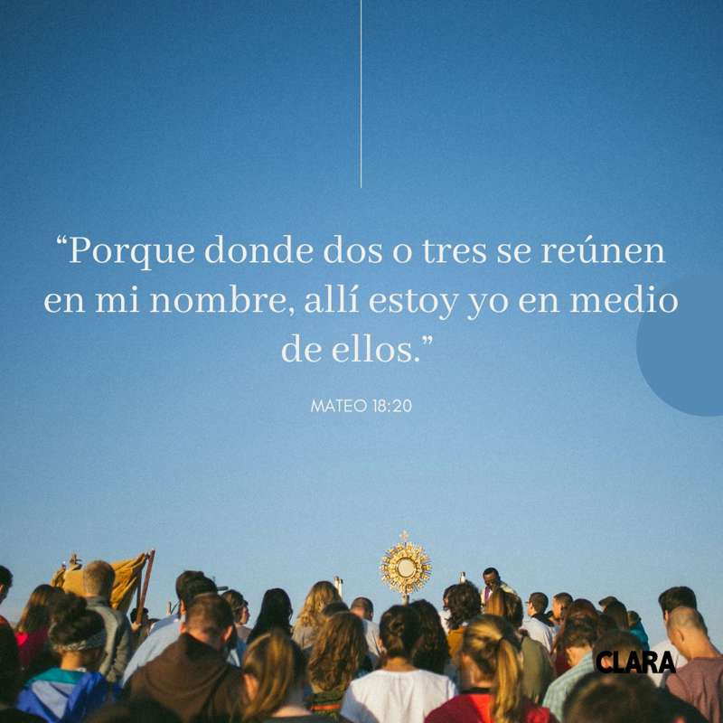

Nombre de la alumna: Yoleidy Gricelda Borrayo del Cid. Grado y sección: 5to bachillerato en computación, "B". Centro educativo: Instituto Nacional de Educación Diversificada, (I.N.E.D.). Profesor: César Augusto Chiché Rosales.
Mi párrafo bíblico:
Mateo 18:20:
"Porque donde dos o tres se reúnen en mi nombre, allí estoy yo en medio de ellos."

Datos acerca de Mateo en la biblia en el siguiente link: